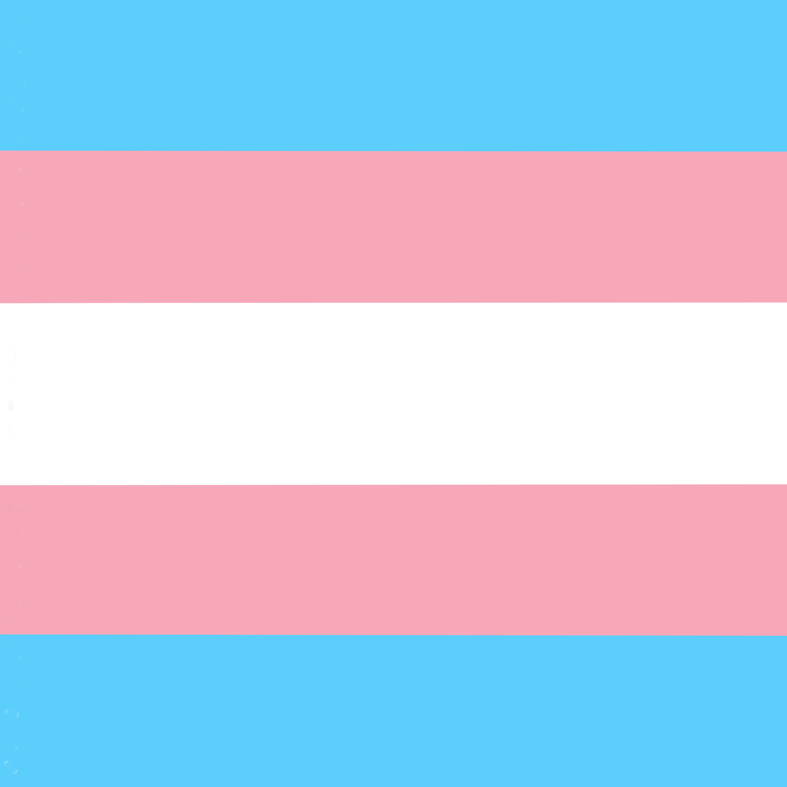

Un peu d'histoire
On entend souvent la phrase "La transidentité c'est tout
nouveau" ou des variations qui ont le même sens. Pourtant,
si on se penche sur l'histoire de la transidentité. On
retrouve une existence tout du long de l'histoire, sous
différents formes.
Egypte
On en retrouve la trace en Egypte antique au travers d'un
troisième genre. Il y a aussi le conte des deux frères, dans
lequel Bata décide de retirer son pénis afin de ressembler à
sa femme. Il dira notamment: "Je suis une femme tout autant
que toi".
Les déesses Mout et Sekhmet sont aussi représentées dans une
forme interprétable à la définition de transgenre de nos
jours, notamment ayant un physique mélangeant les deux
sexes.

Grèce
La Grèce antique, déjà connue pour son ouverture à
l'homosexualité, n'était pas étrangère à la transidentité
non plus. La déesse Cybèle était vénérée par un groupe de
personnes se désignant d'elles-mêmes comme des femmes, en
dépit de leurs genre assigné à la naissance.
Il serait encore possible de faire une énorme liste, si cela
vous intéresse, je vous invite à lire
la page Wikipédia dédiée à ceci

Et maintenant ?
Si on fait un bond en avant vers juin 1968, voit les émeutes
de Stonewall à New York. Stonewall Inn est un bar célèbre
pour les personnes LGBTIQ+. Lors d'un des habituels raids de
la police, Marsha P. Johnson, une femme transgenre qui était
présente, décide de lancer un pavé à ces derniers afin de
défendre ses adelphes (terme neutre pour frère et sœur).
Plusieurs policiers sont pris en otages et pendant plusieurs
jours près de 2'000 émeutiers affrontent les forces de
l'ordre.

C'est de là que démarre la marche des fiertés, qui a encore
lieu de nos jour, bien que nettement plus calme et faites,
en règle générale, avec la coopération des forces de
l'ordre.
De nos jours, Marsha est devenue une célébrité à travers la
communauté LGBTIQ+ et même si ça participation aux émeutes
en tant qu'instigatrice est remise en doute, elle reste une
figure de proue importante et un symbole de la résistance
LGBTIQ+.

Image créée par
Lucielle
Depuis ces émeutes, les droits LGBTIQ+ accélèrent, c'est
ainsi que la psychiatrisation de l'homosexualité ainsi que
la reconnaissance des couples qui arrivent fin des années 90
début des années 2000.
En Suisse, il faudra attendre 2005 pour que la
reconnaissance des couples soient mise en place et 2022 pour
l'acceptation du mariage.
Pour ce qui est de la transidentité, l'OMS a retiré la
transidentité de la classification des troubles mentaux en
2019. En Suisse, en 2022, la facilitation de la transition
administrative est acceptée sans référendum.
Sources